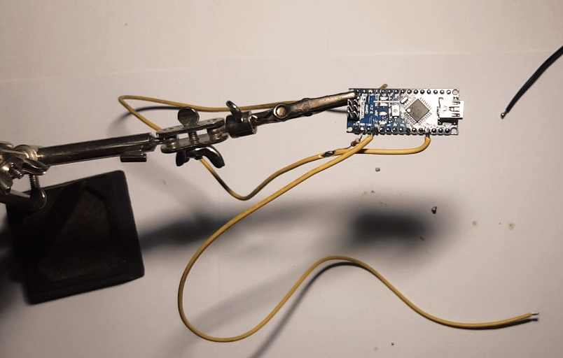
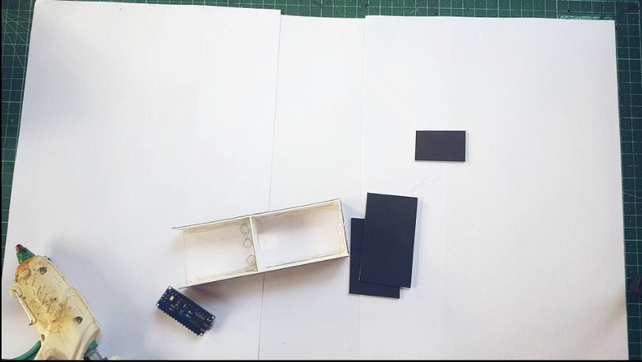

Arduino Nano Lie Detector
A fun and interactive project to detect lies using an Arduino Nano, LEDs, and a bit of creativity!
How It All Started
It all began when my friend, who shall remain nameless (but you know who you are), developed a habit of telling tall tales. From claiming they could run a marathon in under an hour to insisting they invented the internet, it was time to put their "truthfulness" to the test. Enter the Arduino Nano Lie Detector—a device born out of equal parts curiosity, humor, and a desire to call out some of those outrageous fibs. While it’s not exactly FBI-grade technology, it’s a fun way to see who’s sweating under the pressure of their own stories!
Step 1:Components
- Arduino Nano
- Green LED
- Red LED
- Orange LED
- Resistor (10k)
- Cables
Materials Needed
- Cardboard
- Tinfoil
- Velcro
- Hot Glue
Tools Needed
- Hot Glue Gun
- Soldering Iron
- Craft Knife
Step 2: Wiring
The wiring for this project was straightforward. The Following steps were used:
- Connected a long piece of cable to the Arduino's analog pin 0.
- Attached the 10k resistor to ground and the extended analog 0 pin.
- Connected another long piece of cable to the Arduino's 5V pin.
- Connected the anode of the green LED to pin 2 and the cathode to ground.
- Connected the anode of the orange LED to pin 3 and the cathode to ground.
- Connected the anode of the red LED to pin 4 and the cathode to ground.
Step 3: Coding
The code for this project is simple and controls the LEDs based on the skin conductivity readings. Here’s the code:
void setup() {
Serial.begin(9600);
pinMode(2, OUTPUT);
pinMode(3, OUTPUT);
pinMode(4, OUTPUT);
digitalWrite(2, HIGH);
delay(500);
digitalWrite(3, HIGH);
delay(500);
digitalWrite(4, HIGH);
delay(500);
}
void loop() {
if (analogRead(A0) > 60)
{
digitalWrite(4, HIGH);
}
else
{
digitalWrite(4, LOW);
}
if (analogRead(A0) > 20)
{
digitalWrite(2, HIGH);
}
else
{
digitalWrite(2, LOW);
}
if (analogRead(A0) > 45)
{
digitalWrite(3, HIGH);
}
else
{
digitalWrite(3 , LOW);
}
Serial.println(analogRead(A0));
delay(20);
}
Step 4: Making a Case
To house the components, the following pieces of cardboard needed to be cut:
- Two 15x3 cm rectangles
- One 15x5 cm rectangle
- Three 5x3 cm rectangles (cut a square in the middle of one for the Nano's USB port)
- One 9x5 cm rectangle
- One 6x5 cm rectangle
Assembled the case using hot glue and Velcro for easy access to the components.
Step 5: Finished

And there you have it! The Arduino Nano Lie Detector was complete. While it’s not a foolproof method for detecting lies, it’s a fun way to see who might be sweating under the pressure of their own stories. My friend? Let’s just say they’re a little more careful with their claims now!